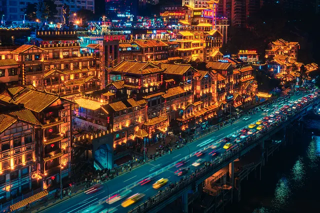

一 NIGHT VIEWS
Hongyadong
A famous riverside complex with traditional-style architecture, restaurants, shops, and glowing nighttime scenery.
Learn more ↗
A famous riverside complex with traditional-style architecture, restaurants, shops, and glowing nighttime scenery.
Learn more ↗A well-known monorail station where a train passes through a residential building, demonstrating Chongqing's unusual urban design.
Learn more ↗
Explore dramatic limestone formations, natural bridges, and spectacular landscapes in Chongqing's wider municipality.
Learn more ↗Walk through historic-style streets, browse traditional crafts, and sample local snacks in this popular cultural destination.
Learn more ↗A busy central commercial district filled with shopping streets, restaurants, and landmarks.
Learn more ↗Enjoy riverfront scenery and explore sightseeing cruises where available, especially around sunset and after dark.
Learn more ↗